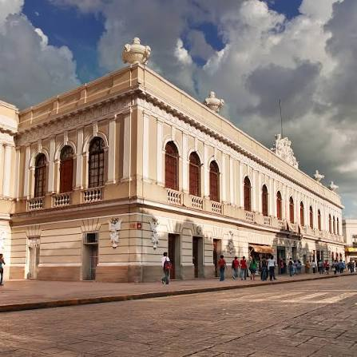

El estado de Yucatán y su capital, Mérida, invitan a sumergirse en un fascinante universo de museos, galerías y centros culturales que narran su historia milenaria y su vibrante presente artístico. Si buscas la guía definitiva para descubrir los tesoros que van desde la herencia prehispánica y colonial hasta las expresiones contemporáneas, y que se adaptan a todos los gustos, este es el recorrido esencial que te espera.
Además, ofrecen un recorrido fascinante por la historia milenaria maya, la época colonial y las expresiones artísticas contemporáneas. Como parte del corazón cultural del sureste de México, la ciudad destaca por contar con una gran variedad de recintos que resguardan la herencia de la "Ciudad Blanca".
Además, ofrecen un recorrido fascinante por la historia milenaria maya, la época colonial y las expresiones artísticas contemporáneas. Como parte del corazón cultural del sureste de México, la ciudad destaca por contar con una gran variedad de recintos que resguardan la herencia de la "Ciudad Blanca".